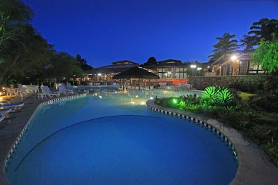
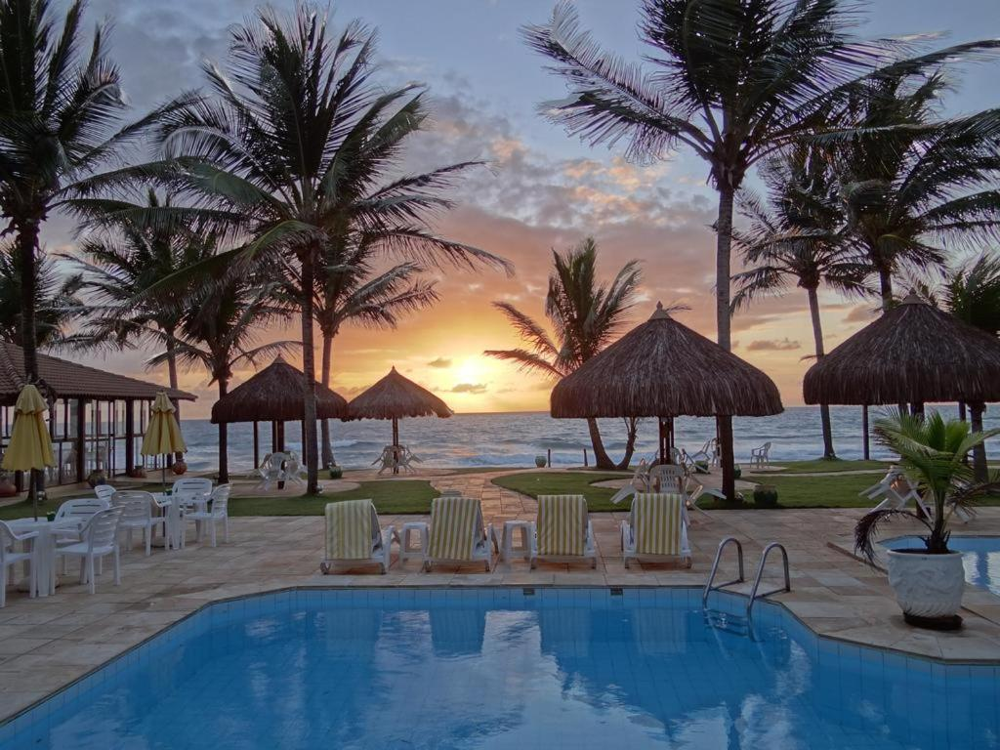
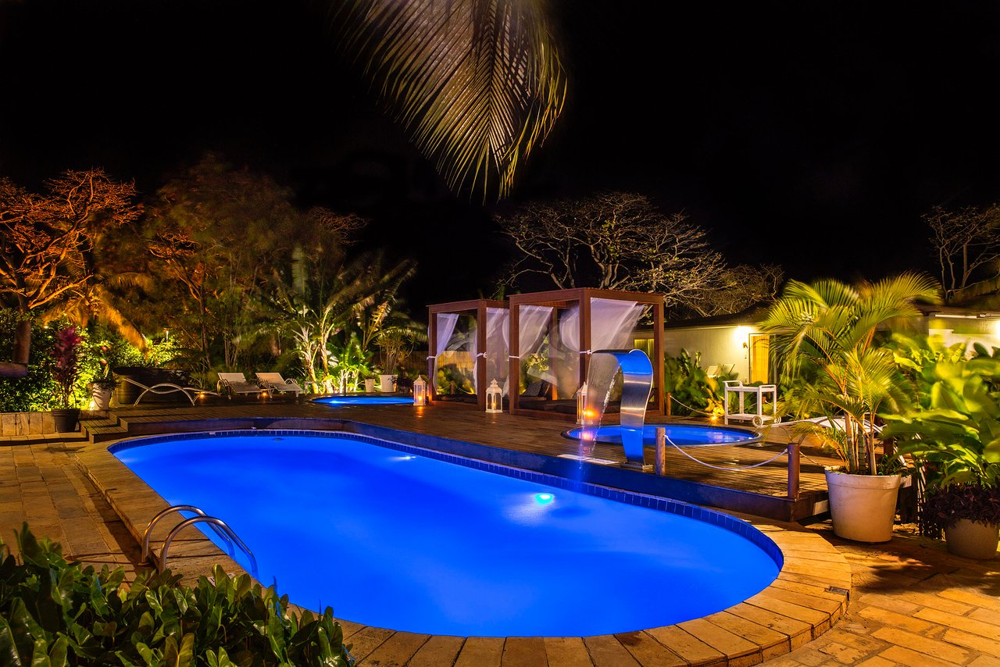

Hotel Portal Lençóis
Postado em 23 de julho de 2022

Localizado no centro de Lençóis, com vista panorâmica do Parque Nacional da Chapada Diamantina, o Portal Lençóis oferece piscina ao ar livre, Wi-Fi gratuito e estacionamento privado de cortesia no local.
Os quartos do hotel dispõem de varanda com vista do jardim e da piscina, bem como ar-condicionado, frigobar, ventilador e banheiro privativo com chuveiro, secador de cabelo e produtos de banho gratuitos.
Você poderá desfrutar do buffet de café da manhã, e a propriedade conta com recepção 24 horas, academia, sauna e bar no local.
Leia Mais
Beira Mar Porto de Galinhas Hotel
Postado em 23 de julho de 2022

Situado na praia de Porto de Galinhas, este hotel oferece piscina e espreguiçadeiras no jardim, além de um salão de jogos. Também oferece sessões de massagem, Wi-Fi gratuito e um buffet de café da manhã no restaurante.
O quarto dispõe de uma varanda com vista do mar, ar-condicionado, TV, frigobar e banheiro privativo. Apresenta uma decoração praiana, com aconchegantes tons pastéis.
O Beira Mar Porto de Galinhas Hotel fica a 2 km do Bairro da Vila e a poucos minutos a pé do Centro de Convenções da cidade. O estacionamento privativo é gratuito.
Leia Mais
Dolphin Hotel (Fernando de Noronha)
Postado em 23 de julho de 2022

Com piscina e banheira de hidromassagem com espreguiçadeiras, o Dolphin Hotel apresenta localização central na Ilha de Fernando de Noronha.
Os quartos do Dophin Hotel contam com TV LCD a cabo, geladeira, frigobar, ar-condicionado e banheiro privativo com secador de cabelo.
Você pode desfrutar diariamente do café da manhã servido no restaurante, que inclui uma seleção de frutas, pães e bolos. O chá da tarde também está incluído. Você pode degustar bebidas refrescantes do bar relaxando em uma rede. Também há uma sauna e um solário.
As praias de Boldró e Conceição ficam a 17 minutos a pé. O estacionamento privativo é gratuito.
Leia Mais